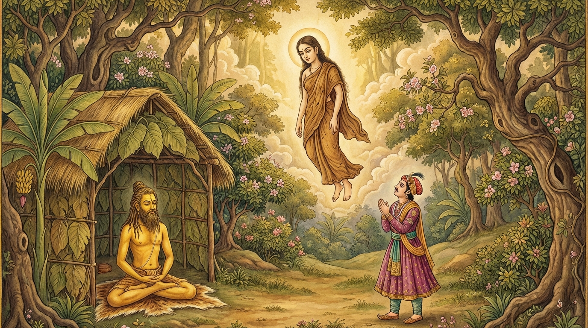

4. අසිතාභූ ජාතකය (234)
බුදුරජාණන් වහන්සේ ජේතවනාරාමයේ වැඩ සිටියදී එක්තරා කුමාරිකාවක් අරබයා “ත්වමෙව දානිමකර” යනුවෙන් ඇරඹෙන මෙම දේශනාව වදාළ සේක. සැවැත් නුවර අගසව් දෙනමට උපස්ථාන කරන කුලයක ඉතා රූමත් දියණියක් සිටියාය. ඇය වැඩිවියට පත් වූ පසු සමාන ජාති ඇති කුලයකට සරණාවා දෙන ලදී. ඇයගේ සැමියා ඇය ගැන කිසිදු තැකීමක් නොකර වෙනත් ස්ත්රීන් කෙරෙහි සිත අලවා හැසිරුණේය. ඔහු තමාට ආදරයක් නොමැති බවත් තමා ගණන් නොගන්නා බවත් වටහා ගත් ඇය, අගසව් දෙනමට ආරාධනා කොට දානය පිරිනමා බණ අසා සෝවාන් ඵලයට පත් වූවාය. එතැන් පටන් මාර්ග ඵල සුවයෙන් කල් ගෙවූ ඇය, “සැමියා මට කැමති නැත. ගිහි ගෙයි විසීමෙන් මට ඇති ඵලය කුමක්ද? මම පැවිදි වෙමි”යි සිතා මව්පියන්ට දන්වා පැවිදි වී රහත් බවට පත් වූවාය. ඇයගේ මෙම ක්රියාව භික්ෂූන් අතර ප්රකට විය. දිනක් භික්ෂූන් වහන්සේලා දම් සභා මණ්ඩපයේ රැස්ව, “ඇවැත්නි, අසවල් කුලයේ දියණිය තමාගේ යහපත සොයන්නී (අත්ථගවෙසිකා), සැමියාගේ අකමැත්ත දැන, අගසව් දෙනමගෙන් බණ අසා සෝවාන් වී, මව්පියන්ගෙන් අවසර ගෙන පැවිදිව රහත් වූවාය. ඇවැත්නි, ඒ කුමරිය සැබවින්ම යහපත සොයන්නියකි” යි කතා කරමින් සිටියහ. බුදුරජාණන් වහන්සේ එහි වැඩම කොට, “මහණෙනි, මා එන්නට පෙර කවර කතාවකින් යුතුව සිටියහුදැ”යි විමසා, එම කාරණය දැනගත් පසු, “මහණෙනි, ඒ කුල දියණිය තමාගේ යහපත සොයන්නියක් වූයේ දැන් පමණක් නොවේ, පෙරත් ඇය යහපත සොයන්නියක්ව සිටියාය” යි වදාරා අතීත කතාව ගෙනහැර දැක්වූ සේක.
අතීතයේ බරණැස් නුවර බ්රහ්මදත්ත රජු රාජ්ය කරන සමයේ බෝධිසත්වයන් වහන්සේ සෘෂි ප්රව්රජ්ජාවෙන් පැවිදිව, අභිඥා සහ සමාපත්ති උපදවාගෙන හිමාලය ප්රදේශයේ වාසය කළහ. එකල බරණැස් රජතුමා තමාගේ පුත් වූ බ්රහ්මදත්ත කුමාරයාගේ පිරිවර සම්පත්තිය දැක, මොහු මට විරුද්ධ වේ යැයි සැක ඉපිද පුතාව රටින් පිටුවහල් කළේය. ඔහු ‘අසිතාභූ’ නම් තම දේවිය ද කැටුව හිමාල වනයට පිවිස මස්, මාළු හා ඵලාපල අනුභව කරමින් පන්සලක වාසය කළේය. එහිදී ඔහු එක්තරා කින්නරියක දැක ඇය කෙරෙහි බැඳුණු සිතින් යුතුව, “මැය මගේ බිරිඳ කරගන්නෙමි”යි සිතා අසිතාභූ දේවිය ගැන නොසලකා කින්නරිය පසුපස ගියේය. අසිතාභූ දේවිය ඔහු කින්නරිය ලුහුබඳිනු දැක, “මොහු මා ගැන නොසලකා කින්නරියක් පසුපස යයි. මොහුගෙන් මට ඇති ඵලය කුමක්ද?” යි කලකිරුණු සිත් ඇතිව බෝධිසත්වයන් වහන්සේ වෙත එළඹ, වැඳ, තමන්ට කසිණ භාවනාව කියා දෙන ලෙස ඉල්ලා සිටියාය. ඇය කසිණ භාවනාව වඩා අභිඥා සහ සමාපත්ති උපදවාගෙන, බෝධිසත්වයන් වහන්සේට වැඳ අවුත් තමන්ගේ පන්සල් දොරටුවෙහි සිටියාය. බ්රහ්මදත්ත කුමාරයා ද කින්නරිය පසුපස ඇවිද ඇය ගිය මගක්වත් සොයාගත නොහැකිව, බලාපොරොත්තු සුන්ව පන්සල දෙසට ආවේය. අසිතාභූ දේවිය ඔහු එනු දැක අහසට පැන නැගී මැණික් පැහැති අහස් තලයේ සිට, “ආර්ය පුත්රය, ඔබ නිසා මම මේ ධ්යාන සැපය ලද්දෙමි” යි පවසා මෙම ගාථාව කීවාය:
“හිමියනි, ඔබ මා ගැන යම් කාමාශාවක් දැරුවේ ද, එය පහව ගියේ ඔබ විසින්ම දැන් කළ මේ ක්රියාව නිසාමය. කියතකින් කැපූ ඇත් දළක් නැවත එක් කළ නොහැකි සේ, ඒ ආශාව නැවත හට නොගන්නා ලෙස සිඳී ගියේය.”
මෙසේ පළමු ගාථාව වදාළාය.
එහි ත්වමෙව දානිමකර යනු, “ආර්ය පුත්රය, මා හැර දමා කින්නරිය පසුපස ලුහුබඳින ඔබමයි දැන් මෙය (මා තුළ ඔබ ගැන තිබූ බැඳීම සිඳීම) සිදු කළේ.” යං කාමො බ්යගමා තයී යනු, “ඔබ ගැන මා තුළ යම් කාමාශාවක් වී නම්, එය (ධ්යාන) විෂ්කම්භන ප්රහාණයෙන් දුරු වී ගියේය; යමක් දුරු වීම හේතුවෙන් මම මෙම විශේෂත්වයට පත් වූයෙමි” යි දක්වයි. සොයං අප්පටිසන්ධිකො යනු, “ඒ කාමය දැන් නැවත නූපදින තත්ත්වයට පත් විය (අප්පටිසන්ධික විය); නැවත සන්ධි කළ නොහැකි විය.” ඛරඡින්නංව රෙනුකන්ති යනු, මෙහි ‘ඛර’ යනු කියතයි; ‘රේනුක’ යනු ඇත් දළයි. “යම් සේ කියතෙන් කපන ලද ඇත් දළයක් නැවත එක්කළ නොහැකි වේ ද, නැවත පෙර පරිදි නොඇලේ ද, එසේම නැවත ඔබ සමග මගේ සිතේ එක්වීමක් නම් නැතැයි” පවසා, ඔහු බලා සිටියදීම අහසට නැගී වෙනත් තැනකට ගියාය.

ඇය ගිය පසු ඔහු වැළපෙමින් දෙවන ගාථාව කීවේය:
“සීමාව ඉක්මවූ ආශාව (අත්රිච්ඡාව) නිසා ද, දැඩි ලෝභය නිසා ද, එම දැඩි ලෝභයෙන් උපන් මදය නිසා ද, මම අසිතාභූ දේවියගෙන් පිරිහුණාක් මෙන් මාගේ යහපතින් ද (අර්ථයෙන් ද) පිරිහෙමි.”
මෙසේ දෙවන ගාථාව කීවේය.
එහි අත්රිච්ඡං අතිලොභෙන යනු, ‘අත්රිච්ඡා’ යනු “මේ මේ දේට ඇති කැමැත්ත” යැයි කියන ලද සීමා රහිත තණ්හාවයි; ‘අතිලෝභ’ යනු සීමාව ඉක්මවා පවතින ලෝභයයි. අතිලොභමදෙන ච යනු, පුරුෂ මදය ඉපදීම හේතුවෙන් අතිලෝභ මදය හටගත්තේය. මේ කියන ලද්දේ මෙයයි: “අසීමිත ආශාවට වසඟ වූ පුද්ගලයා, දැඩි ලෝභය සහ දැඩි ලෝභය නිසා ඇති වූ මදය හේතුවෙන්, මා අසිතාභූ නම් රජ දියණියගෙන් පිරිහුණා සේම, මෙසේ තමාගේ යහපතින් (අර්ථයෙන්) පිරිහෙයි.”
මෙසේ ඔහු එම ගාථාව කියා වැලපී, වනයෙහි තනිවම වාසය කොට, පියාගේ ඇවෑමෙන් ගොස් රාජ්යය භාර ගත්තේය.
බුදුරජාණන් වහන්සේ මෙම ධර්ම දේශනාව ගෙනහැර දක්වා ජාතකය ගළපා වදාළ සේක. “එකල රජ පුතු සහ රජ දියණිය වූයේ දැන් මේ යුවළයි. එදා තාපසව සිටියේ මම ම වෙමි.”
හතරවන වූ අසිතාභූ ජාතක වර්ණනාව නිමා විය.